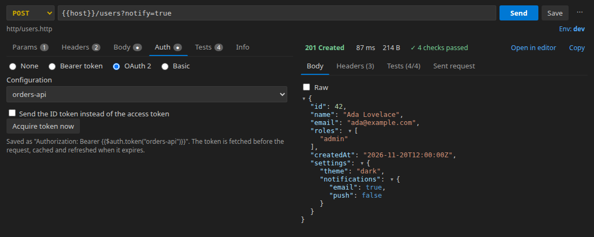

OAuth 2.0 tokens in .http files (VS Code, Cursor, CI)
Most APIs want an OAuth 2.0 access token: you sign in, get a token from the token endpoint, put it in Authorization: Bearer …, and do it all again when it expires an hour later. Since 0.10, Plainwire does this for you. Describe the provider once in http-client.env.json, write {{$auth.token("my-api")}} where the token goes, and the token is fetched before the request, cached, and refreshed when it expires. It uses the JetBrains HTTP Client's format, so the same files work in IntelliJ IDEA and WebStorm.

Quick start: Client Credentials
Machine-to-machine APIs use the Client Credentials grant: a client ID and secret, no browser. In http-client.env.json:
{
"dev": {
"baseUrl": "https://api.example.com",
"Security": {
"Auth": {
"my-api": {
"Type": "OAuth2",
"Grant Type": "Client Credentials",
"Token URL": "https://login.example.com/oauth/token",
"Client ID": "my-client-id",
"Scope": "orders:read"
}
}
}
}
}
Put the secret in http-client.private.env.json (add it to .gitignore). Plainwire merges the two files key by key, so the private file only needs the part that is secret:
{
"dev": { "Security": { "Auth": { "my-api": { "Client Secret": "s3cr3t" } } } }
}
Then use the token in any request:
### My orders
# @assert status == 200
GET {{baseUrl}}/orders
Authorization: Bearer {{$auth.token("my-api")}}
Select the dev environment in the status bar and press Send. The first request fetches a token; later requests reuse it until it expires.
Try it against a real server
Duende's public IdentityServer demo has a test client. With the two files below, plainwire run --env demo gets a token and calls the demo's protected API:
http-client.env.json
{ "demo": { "Security": { "Auth": { "duende": {
"Type": "OAuth2", "Grant Type": "Client Credentials",
"Token URL": "https://demo.duendesoftware.com/connect/token",
"Client ID": "m2m", "Scope": "api" } } } } }
http-client.private.env.json
{ "demo": { "Security": { "Auth": { "duende": { "Client Secret": "secret" } } } } }
api.http
### Demo API with a client-credentials token
# @assert status == 200
GET https://demo.duendesoftware.com/api/test
Authorization: Bearer {{$auth.token("duende")}}
$ plainwire run --env demo plainwire 0.10.0 · 1 request in 1 file · environment demo from http-client.env.json, http-client.private.env.json api.http ✓ GET Demo API with a client-credentials token 200 · 456 ms · 1/1 checks 1 passed, 0 failed (1 requests, 1049 ms)
That is a real run (20 November 2026). Without the private file the secret is missing, and the run stops with the provider’s answer instead of sending the request unauthenticated:
✗ GET Demo API with a client-credentials token
Auth "duende": token request failed: invalid_client (HTTP 400)
at api.http:3
Signing in with a browser: Authorization Code + PKCE
For APIs that act for a user, use the Authorization Code grant. Plainwire opens the provider's sign-in page in your browser and listens on a loopback address for the redirect (RFC 8252, the way desktop apps do it), then exchanges the code for tokens:
"my-app": {
"Type": "OAuth2",
"Grant Type": "Authorization Code",
"Auth URL": "https://login.example.com/authorize",
"Token URL": "https://login.example.com/oauth/token",
"Redirect URL": "http://127.0.0.1:8765/callback",
"Client ID": "my-public-client",
"Scope": "openid profile offline_access",
"PKCE": true
}
- Redirect URL must be
http://localhost:<port>/…orhttp://127.0.0.1:<port>/…; register the same URL with the provider. Leave it out and Plainwire uses a free port onhttp://127.0.0.1:<port>/callback, which works with providers that accept any loopback port. - PKCE:
trueuses SHA-256 with a generated verifier;{"Code Challenge Method": "Plain", "Code Verifier": "…"}is also accepted. - With
offline_access(or whatever your provider calls it) you get a refresh token, and an expired token is refreshed without opening the browser again. {{$auth.idToken("my-app")}}gives the OpenID Connect ID token instead of the access token;"Use ID Token": truemakes$auth.tokenreturn it too.
We tested this end to end against Duende's demo (client interactive.public.short, PKCE): sign-in in a real browser, the redirect back to Plainwire, a token the demo API accepted, and after the 75-second token expired, a refresh that the API accepted too.
All grant types and settings
| Grant Type | Needs | Use it for |
|---|---|---|
Client Credentials | Token URL, Client ID, Client Secret | Service-to-service APIs and CI. |
Password | Token URL, Client ID, Username, Password | Older APIs and test users (deprecated by OAuth 2.1, still common). |
Authorization Code | Auth URL, Token URL, Client ID; PKCE recommended | Signing in as a user in the browser. |
Device Authorization | Device Auth URL, Token URL, Client ID | Providers that show a code to enter on another device; Plainwire shows the code, copies it, opens the page and polls. |
Implicit | Auth URL, Client ID | Legacy single-page-app clients (no refresh). |
"Type": "Mock" | "Token" (and optional "ID Token") | A fixed token for local development and tests. |
Other keys: "Client Credentials" = "basic" (default, HTTP Basic), "in body" or "none" for public clients; "Custom Request Parameters" and "Custom Request Headers" such as {"audience": {"Value": "https://api", "Use": "In Token Request"}} (Use: Everywhere, In Auth Request, In Token Request); "Acquire Automatically": false to sign in only when you run Plainwire: Acquire OAuth 2 Token…; "Open Complete URI": true for device codes. Any value can use {{variables}}, for example "Password": "{{password}}" from the private file. The extension gives completions and checks for all of these keys while you edit http-client.env.json.
In the editor and in CI
- In the request editor, the Auth tab’s OAuth 2 option writes the
Authorization: Bearer {{$auth.token("…")}}header for you, with a dropdown of the configurations in the selected environment. - Plainwire: Acquire OAuth 2 Token… gets a fresh token now (it skips the cache); Plainwire: Clear OAuth 2 Tokens forgets them, so the next request signs in again. Tokens are kept in memory for the window and are never written to disk or history.
- Copy as cURL / Code inserts the cached token if there is one; it never starts a sign-in.
- The CLI and GitHub Action run the same files: one token per
plainwire run. In CI use Client Credentials or Password, with secrets from--env-file,{{$processEnv CLIENT_SECRET}}or{{$dotenv CLIENT_SECRET}}. In a terminal, browser grants print the sign-in URL and open your browser.
Compared with other clients
REST Client has no OAuth 2 support; fetching a token by hand with a chained login request is the usual workaround (its most-reacted OAuth issue, #302, is open). The JetBrains HTTP Client defines this format, and Plainwire reads the same keys (all except Start Polling After Browser), so a team can mix IntelliJ and VS Code. Postman and Thunder Client have OAuth 2 in a GUI form; their settings live in the app or its cloud, while here they are a JSON file in your repository, with the secret in a git-ignored file next to it.
FAQ
Where are my tokens stored?
In memory only, for the VS Code window or the CLI run. Nothing is written to disk, history, or anywhere else, and Plainwire has no telemetry. Source: GitHub (MIT).
My provider only allows https redirect URLs.
Plainwire can only receive a sign-in on a loopback http address. Most providers allow http://localhost or http://127.0.0.1 for native and development clients; register one of those. Otherwise use the Device Authorization grant if the provider supports it.
Does it work in Cursor, Windsurf and VSCodium?
Yes, it is the same extension. Install the .vsix from the latest release; see installing in Cursor and VSCodium.